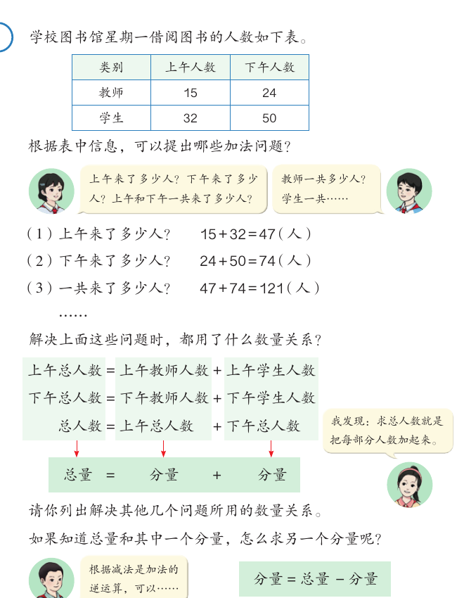
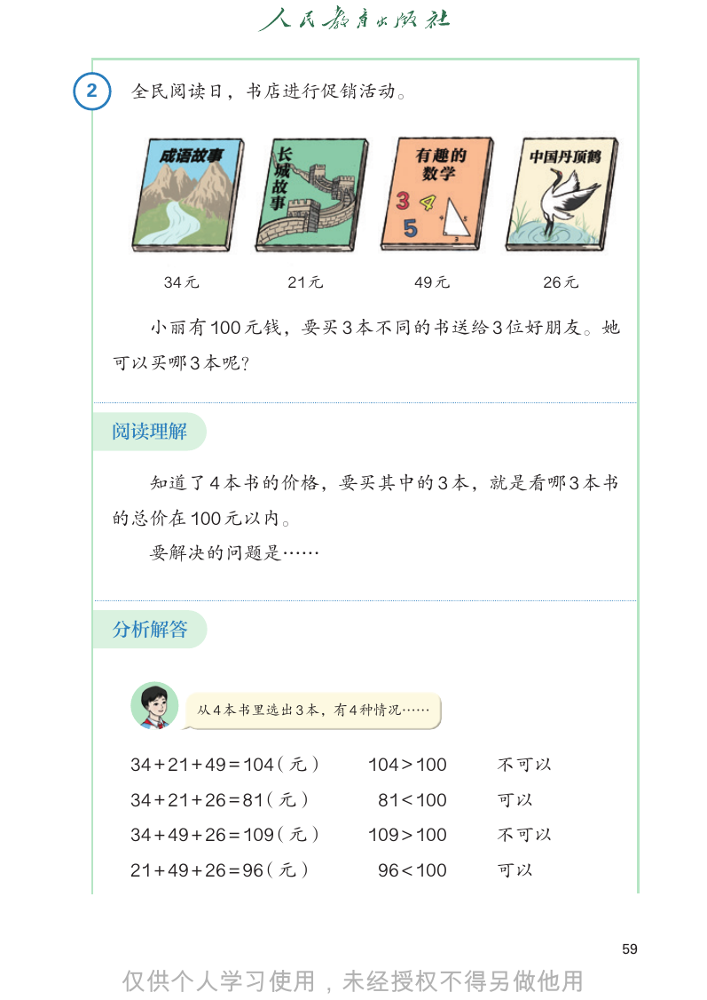
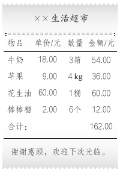
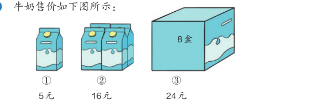
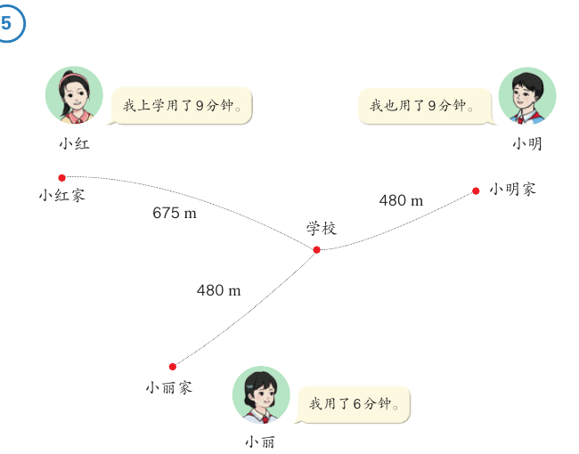

加法模型和乘法模型
买书、购物、上学走路，这些问题看起来不一样，背后却藏着几个相同的数量关系。这一课学三个最常用的：总量 = 分量 + 分量，总价 = 单价 × 数量，路程 = 速度 × 时间。
学完本课，你能够：
- 说出加法模型：总量 = 分量 + 分量，并用减法求一个分量。
- 说出什么是单价、数量和总价，用 总价 = 单价 × 数量 解决购物问题。
- 说出什么是速度、时间和路程，会写 80 米/分 这样的速度。
- 用 路程 = 速度 × 时间 解决行程问题。
- 按“阅读理解—分析解答—回顾反思”三步解决问题。
01总量与分量
先说结论：把每部分合起来求总数，用的都是同一个数量关系：总量 = 分量 + 分量。
教材的例子是学校图书馆星期一借阅图书的人数。上午来了 15 位教师、32 名学生；下午来了 24 位教师、50 名学生。

| 问题 | 算式 | 数量关系 |
|---|---|---|
| 上午来了多少人？ | 15 + 32 = 47（人） | 上午总人数 = 上午教师人数 + 上午学生人数 |
| 下午来了多少人？ | 24 + 50 = 74（人） | 下午总人数 = 下午教师人数 + 下午学生人数 |
| 一共来了多少人？ | 47 + 74 = 121（人） | 总人数 = 上午总人数 + 下午总人数 |
三行的数量关系都是“把每部分人数加起来”。教材把它们概括成一个式子。
下面用线段图看一看。线段图把每个量画成一段线：分量连起来，就是总量。
线段长短按数的大小画。例子数据来自教材第 58、61 页。
02用加法模型解决问题
先说结论：解决问题按三步走——阅读理解、分析解答、回顾反思。买书问题既可以用“总量 = 分量 + 分量”，也可以用“分量 = 总量 − 分量”。

- 阅读理解：知道了 4 本书的价格，要买其中的 3 本。就是看哪 3 本书的总价在 100 元以内。
- 分析解答：从 4 本书里选出 3 本，有 4 种情况。把每种情况的总价算出来，和 100 比。
- 回顾反思：想一想用了什么数量关系，还有没有别的算法。
教材还给了第二种想法：先算出 4 本书的总价是 130 元，再减去不买的那一本。只要减去的那本书的价格大于 30 元，剩下 3 本书的总价就不会超过 100 元。
书名和价格来自教材第 59 页。
03单价、数量和总价
先说结论：每件商品的价格是单价，买了多少是数量，一共花了多少钱是总价。总价 = 单价 × 数量。

看小票的前两行：
- 每箱牛奶 18 元，买了 3 箱：18 × 3 = 54（元）。
- 每千克苹果 9 元，买了 4 kg：9 × 4 = 36（元）。
小票上的“金额”一列，就是每种商品的总价。
知道总价和数量，可以求单价：单价 = 总价 ÷ 数量
知道总价和单价，可以求数量：数量 = 总价 ÷ 单价
同样多的东西，包装不同，单价也可能不同。教材练习十三第 8 题问：三种买法中，哪种单价最便宜？

价格来自教材第 65 页。② 的盒数教材没有写数字，图上画的是 4 盒（前 2 盒、后 2 盒），这里按 4 盒算。
04促销省了多少钱
先说结论：同一个问题，可以用不同的数量关系想，算式不同，结果相同。
教材第 63 页：苹果原价 12 元/千克，现价 9 元/千克。王阿姨买了 4 kg 苹果，一共节省了多少钱？原价指的是原来的单价。
节省的钱 = 原来的总价 − 现在的总价。
= 48 − 36 = 12（元）
节省的钱 = 每千克便宜的钱 × 数量。
= 3 × 4 = 12（元）
答：一共节省了 12 元。教材请你比较：这两种方法之间有什么联系和区别？
05速度、时间和路程
先说结论：比谁走得快，要看每分钟走多少米。每分钟（或每小时等）行的路程叫速度。路程 = 速度 × 时间。

| 同学 | 家到学校的路程 | 用的时间 |
|---|---|---|
| 小红 | 675 m | 9 分钟 |
| 小明 | 480 m | 9 分钟 |
| 小丽 | 480 m | 6 分钟 |
- 小红比小明走得快：他们用了同样的时间，小红走得远。
- 小丽比小明走得快：他们走的路程相同，小丽用时少。
- 小丽和小红，路程不同，时间也不同。要算每分钟走的路程：小丽 480 ÷ 6 = 80（m），小红 675 ÷ 9 = 75（m）。75 < 80，小丽走得最快。
简化模型：假设每个人一路上走得一样快。路程和时间来自教材第 66 页；小明每分钟走 480 ÷ 9 m，不是整数，图上写“约”。
一共行了多长的路，就是路程；每分钟（或每小时等）行的路程，就是速度；行了几分钟（或几小时等），就是时间。
知道路程和时间，可以求速度：速度 = 路程 ÷ 时间
知道路程和速度，可以求时间：时间 = 路程 ÷ 速度
06用乘法模型解决问题
先说结论：求速度，要先求出路程和时间。仪表盘上两个里程数相减，就是这一段的路程。
教材第 67 页：早上 8:30，李叔叔开车从甲地出发，11:30 到达乙地。汽车仪表盘出发时显示 2522 km，到达时显示 2792 km。李叔叔的速度是多少？
- 阅读理解：仪表盘上的数表示汽车出厂之后行驶的总里程数。从 8:30 到 11:30 是 3 小时。要求的是速度。
- 分析解答：根据“速度 = 路程 ÷ 时间”，先求从甲地到乙地的路程，再除以时间。
（2792 − 2522）÷ 3 = 270 ÷ 3 = 90（千米 / 时） - 回顾反思：90 × 3 = 270（km），2522 + 270 = 2792（km），解答正确。
答：李叔叔从甲地开往乙地的速度是 90 千米 / 时。
三个模型放在一起看
| 模型 | 求“大”的量 | 求一个“小”的量 | 教材例子 |
|---|---|---|---|
| 加法模型 | 总量 = 分量 + 分量 | 分量 = 总量 − 分量 | 15 + 32 = 47（人） |
| 乘法模型一 | 总价 = 单价 × 数量 | 单价 = 总价 ÷ 数量 数量 = 总价 ÷ 单价 | 18 × 3 = 54（元） |
| 乘法模型二 | 路程 = 速度 × 时间 | 速度 = 路程 ÷ 时间 时间 = 路程 ÷ 速度 | 270 ÷ 3 = 90（千米 / 时） |
07自测与速记
速记表
| 要点 | 一句话 |
|---|---|
| 加法模型 | 总量 = 分量 + 分量；分量 = 总量 − 分量 |
| 单价、数量、总价 | 总价 = 单价 × 数量；单价 = 总价 ÷ 数量；数量 = 总价 ÷ 单价 |
| 速度、时间、路程 | 路程 = 速度 × 时间；速度 = 路程 ÷ 时间；时间 = 路程 ÷ 速度 |
| 速度的写法 | 80 米 / 分，读作 80 米每分；800 千米 / 时，读作 800 千米每时 |
| 比快慢 | 时间同，比路程；路程同，比时间；都不同，比速度 |
| 解决问题三步 | 阅读理解 → 分析解答 → 回顾反思 |
相关课程
教材：人教版《数学》四年级上册（2022 课标修订版）第四单元“加法模型和乘法模型”第 58–69 页。标为“补充”的内容和模拟演示是课程作者的解释，不是教材原文。